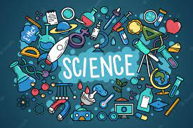

Business
A business text is sent from a company representative to a lead, customer, or other stakeholder. Business texts are most often sent through a business SMS platform or business text messaging app. These tools help the company send, receive, and organize messages.
Education

Learning to unpack texts, and to consider alternatives, is a crucial goal for education and growth, especially so in the context of fast-changing contemporary
Entertainment
Give author and title of both essays and a short summary of each essay. #2- Identify primary aims of both essays. Define aim and give two examples from
Climate
In addition to reading and writing science texts, students engage in science talk that includes among various purposes: reporting, explaining, questioning.